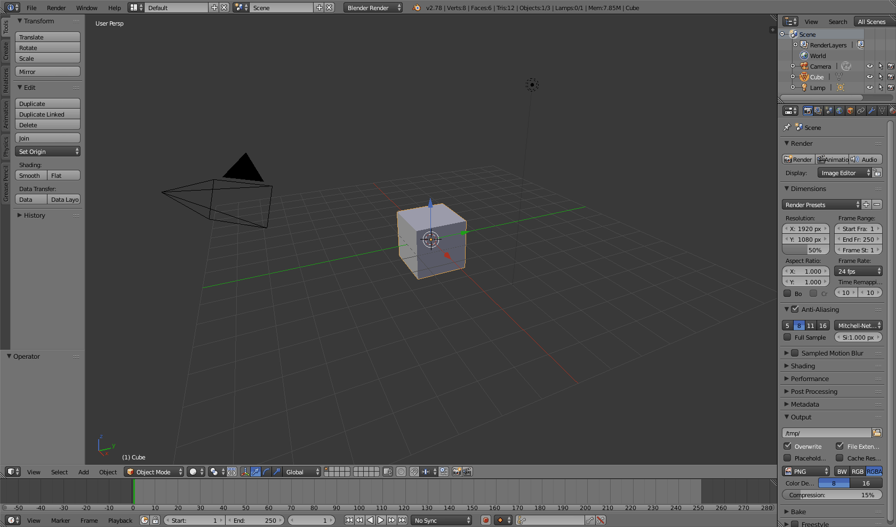

mc_rtc::Configuration general purpose configurationThis guide will help you to create environment that are compatible with mc_rtc and other JRL/LIRMM softwares.
The screen captures of this guide are taken from Blender 2.78 but it should apply to any recent enough Blender version.
Concerning Blender, on Ubuntu systems, it is advised to use Thomas Schiex’s PPA in order to get a fully featured Blender installation. In particular, collada (.dae files) import is not supported in the repository version of Blender.i
robot_script is a collection of Blender and shell scripts we will be using to go from a Blender file to a fully functional environment for mc_rtc.
mkdir -p $HOME/.config/blender/$(blender -v|awk '{print $2}')/scripts/addonsrobot_script and navigate to the robot_script foldercp -r blender_addons/io_qconvex/ $HOME/.config/blender/$(blender -v|awk '{print $2}')/scripts/addons
Step 1 creates an empty folder to put our addon in while Step 3 simply copy that addon to that folder.
We will not go into the detail of modeling a 3D environment here. For the remainder of this documentation we will be working on the model provided here. When you open this in Blender you should see a large flat surface (named “ground”) with a vertical cylinder in the middle (named “pole”).

Make sure your model meshes have a unary scale. You can do so by applying the scale parameter of every objects in your scene:
We will create two surfaces in this section, the first will showcase the basics to create a surface, the second will allow us to show an important issue about orientation.
For this first surface, we will create a surface corresponding to the ground.
Congratulations you created you very first surface!
This movie will show this process.
The following conventions are followed and recommended for most environments in mc_rtc:
For this second surface, we will create a surface corresponding to one of the side of the ground. While it does not have any practical purpose, it will serve to illustrate the importance of orientation and how to change it. First, reproduce all the steps above but with a side of the ground mesh to create the surface “GroundSide”.
If you were to generate the environment now, you would notice that surface is not oriented as you expect. This is because the local frame of the object is not correct. We need to make the Z-axis (blue in Blender) match the normal of the surface.
Congratulations, you fixed the orientation issue!
This movie will show this process.
Some caveats apply when designing a planar surface.
When creating a contact between the surface you designed and another surface, mc_rtc will generate contact forces at the points of your surface. This means that the more points you put into a surface, the more variable will be added to the problem. Thus, it is best to keep your surface design simple (i.e. a single quadrilater), especially when you are designing a robot surface.
The points need to be co-planar otherwise the environment generation will fail.
In this section we will create a single cylindrical surface. The same orientation issue applies than with planar surface. Here the convention is that the Z-axis is the cylinder’s axis and the X-axis is the cylinder’s polar axis.
Congratulations, you created your first cylindrical surface!
This movie will show this process.
Note that by default, Blender constrains custom properties value in the [0, 1] range. Be careful when setting your cylinder “width” property as this might be a problem.
To add a collision hull simply add a new mesh and add an empty property named “hull”.
Note that the generation script will create convex hulls for each body in the model, you don’t need to create specific hulls for those.
Before going into the next step, you can get the result of the tutorial here.
Go into the robot_script folder and launch the do_all.sh script as such:
./do_all.sh my_file.blend /path/to/ros/package env_name package_name
The package_name is optional if you are adding the environment to the mc_env_description package.
See the tutorial about visualizing surfaces.
Make sure the origin of the surface object in the Blender project corresponds to what you expect.
Make sure the surface normal is facing the right direction in the Blender project. Make sure that you are viewing the local frame of the object.
To add a surface to a robot, you would follow the same steps as with an environment but the environment model is the robot’s body where you want to add a surface. Then generate the “environment” into a temporary directory and use the generated rsdf file in your original robot’s description folder.